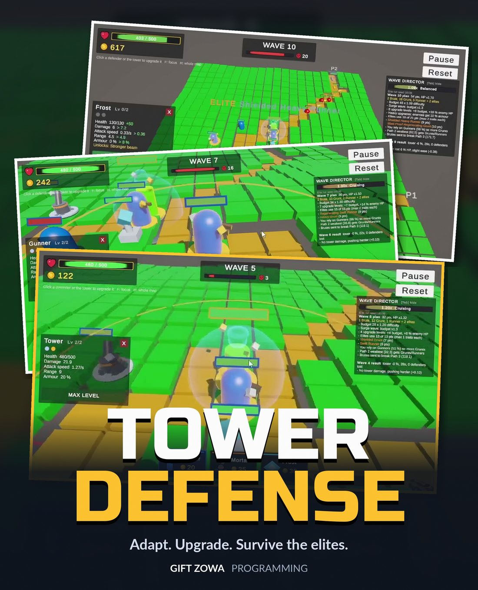
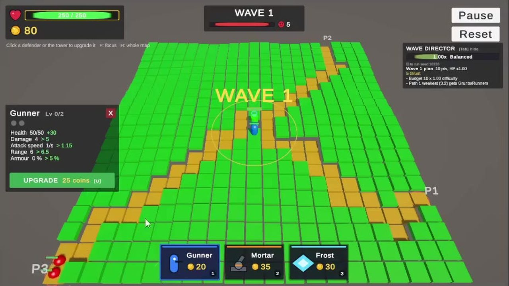
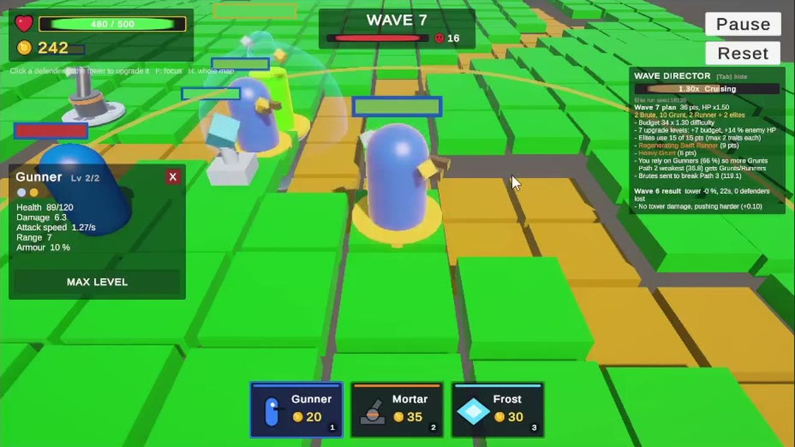
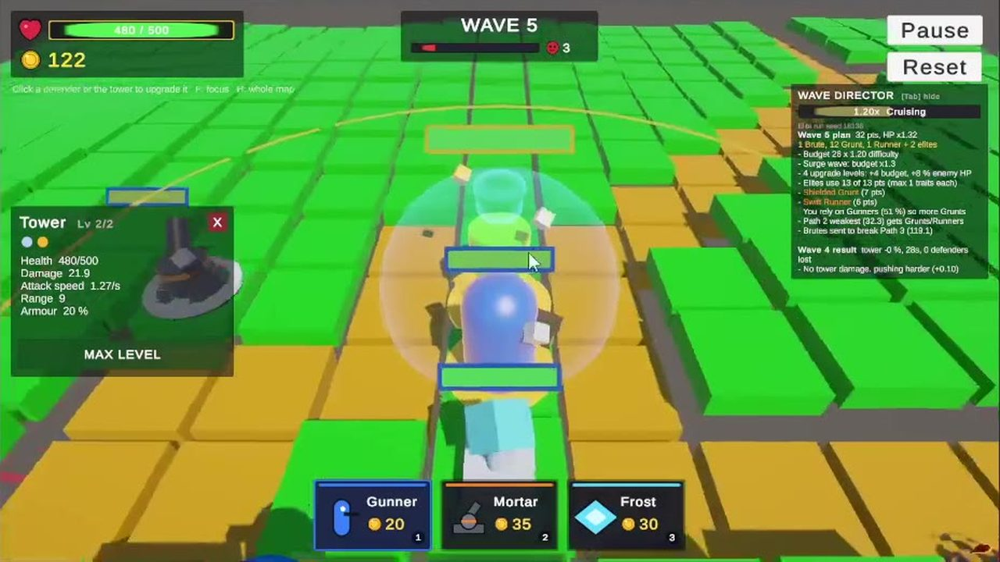
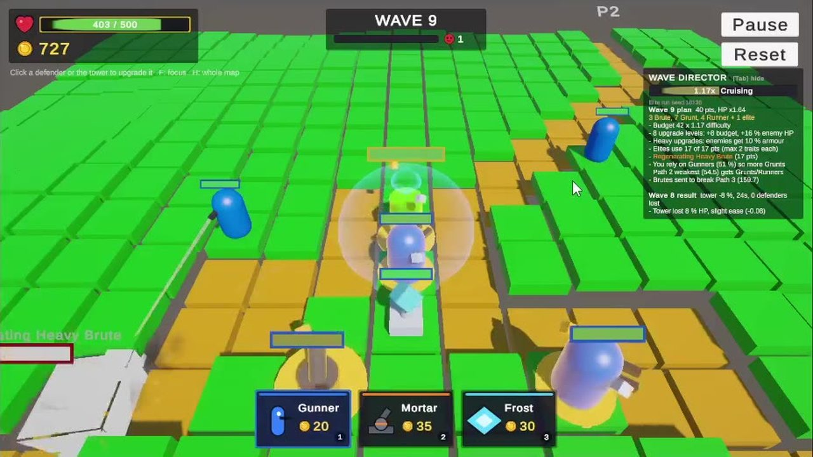
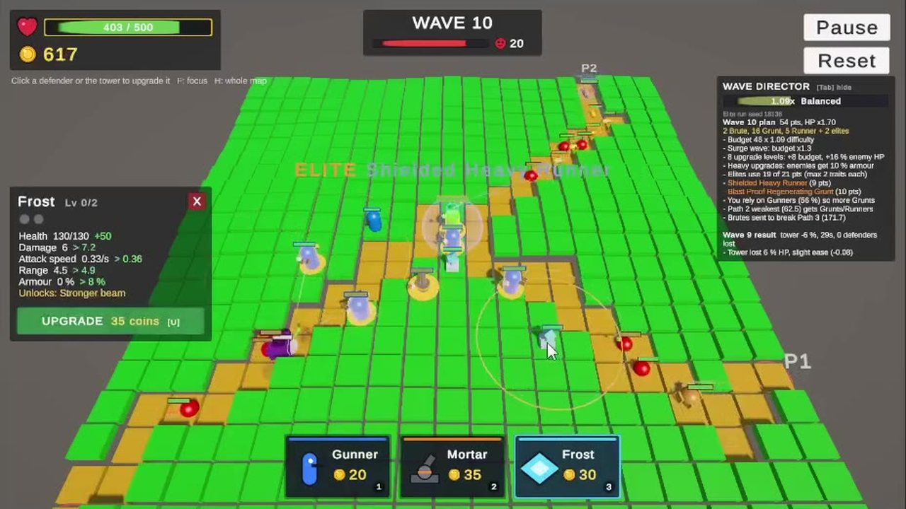
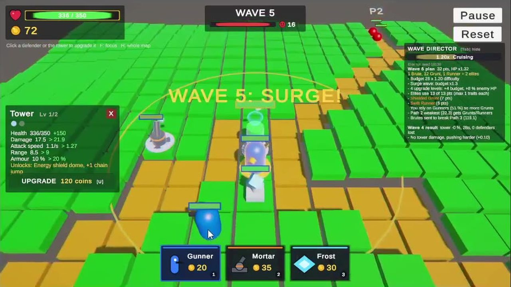
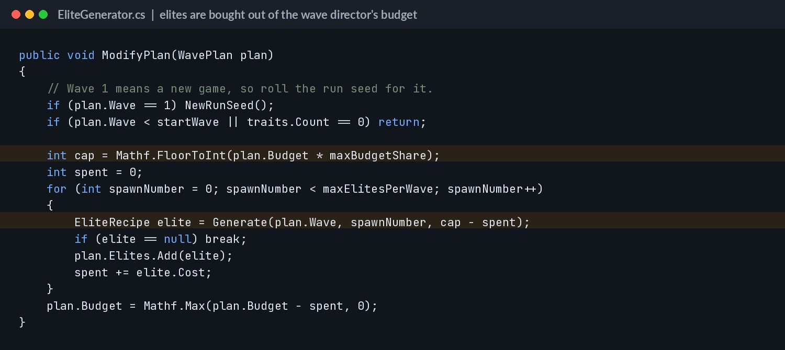
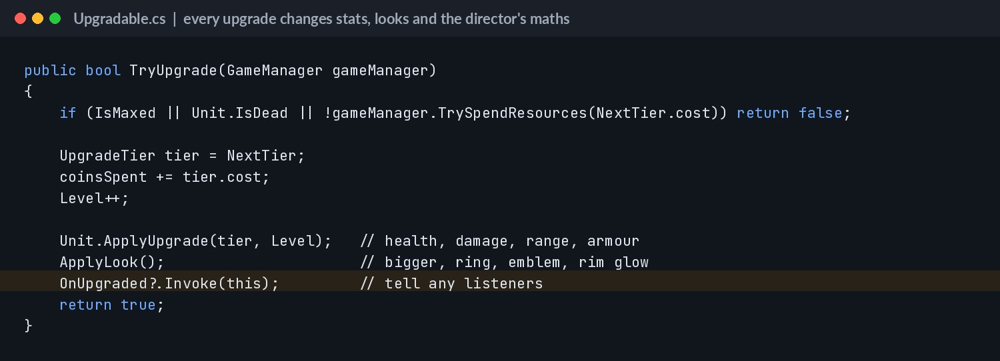

Tower Defense
Three procedural paths, an adaptive wave director, and elite enemies that are never the same twice.
Windows build. Unzip and run the .exe.
The game
Enemies march down three randomly generated paths toward your tower. Spend coins on Gunners, Mortars and Frost units, then upgrade them as the pressure builds. The wave director watches what you rely on and pushes back. From wave three, elite enemies roll random traits like Shielded, Splitter or Frost Immune, so no run plays out the same way.
Single-player 3D tower defense for Windows PC. Place and upgrade three defender types to protect your tower while an adaptive wave director builds every wave around how you play.
The brief
A three part solo programming project for Game Development 3B (GADE7322). The brief asked for a complete tower defense game in Unity with procedural terrain, varied units, an adaptive wave system, upgrades, custom shaders, visual effects and an original procedural feature.
Credits
- Gift Zowa · Programmer
- Solo project. I owned the full codebase and every system in the game.
- Procedural terrain with three enemy paths to the tower.
- Three defenders and three enemies that each attack differently, including a Runner built as a small state machine (Running, Dashing, Returning).
- An adaptive wave director that reads player behaviour through a PlayerTracker and plugs in new rules through an IWaveModifier interface.
- Per-unit upgrades that change stats and looks, and unlock perks like the tower's shield dome.
- Two custom URP shaders (hit wobble with vertex displacement, and an energy shield ripple) plus a post-processing pass.
- Seeded elite enemies built from 8 random traits and paid for out of the wave budget.
What I used in my part of the project.
Why this project
This is my systems project. The interesting part is the feedback loop: the player gets stronger, the director notices and spends its budget differently. My lecturer's feedback on Part 2 was that my units all attacked the same way, so in Part 3 every unit got its own attack style.
Screenshots






How it was made

